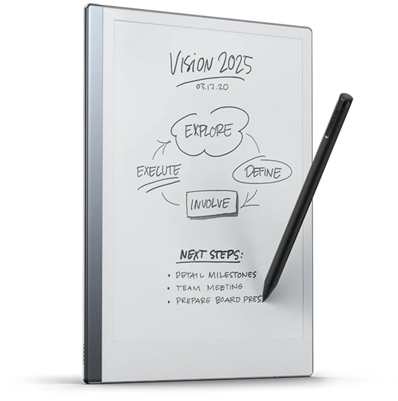

re
M
arkable
about remarkable 2
Shop
For business
FAQ & Support
More
Buy Now


World's
Thinnest
Tablet
reMarkable 2
Thenext Genration Paper Tablet
Replace your notebooks and printed documents with the only tablet that feels like paper.
Buy Now
watch video
scroll to learn more
Praised by tech’s most respected publications